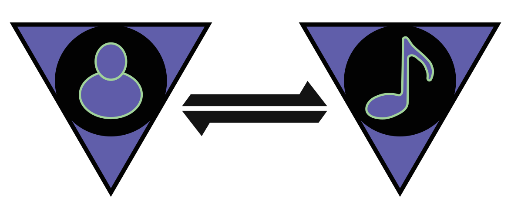

Create, share, and listen to the music you love.
Anytime. Anywhere.
A new way to experience the music you love and create.
Instaspin allows you to instantly share, stream, and create music right from your personal device. Whether it's recording, streaming, creating new playlists for yourself or others, or finding new playlists and artists to suit your needs Instaspin can do it.
Connect with Artists in revolutionary ways.
Through Instapin you can connect with your favourite artists and know what they're up to in the studio, or what they're listening to at the moment. You can access personalized DJ sets as well.